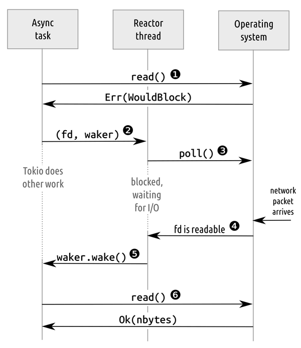
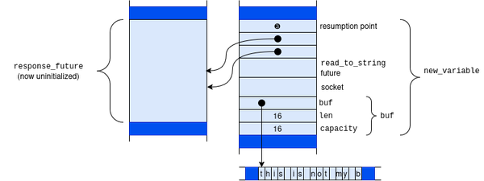

第二十一章 期货
在第二章中，我们介绍了如何使用 Rust 的异步编程机制，以及 async / await 语法和 Tokio 运行时环境。在不违反 Rust 的所有权规则、内存安全要求，同时又不影响性能的情况下实现异步编程并非易事。
在本章中，我们将介绍 Rust 中异步编程的三个基础要素：
Future特性，它定义了一个接口，用于区分那些需要被等待的对象和那些正在等待的对象。- 唤醒机制使得期货能够应对各种变化以及输入/输出事件，而无需持续进行轮询操作。
- 而运行时间和反应堆则将这些未来、唤醒机制以及操作系统接口连接在一起，从而形成了一个功能完善的系统。
async fn 这些接口使得创建未来操作变得非常简单。但是，如果手动实现未来操作，那么它们的确切大小和布局就会在代码中体现出来，这样就能更容易理解它们的作用。当然，对于那些还没有异步实现的新操作或 I/O 类型来说，手动实现是必不可少的。了解未来操作的构造和使用方式，可以帮助你编写自己的代码，同时也能让你更容易阅读并调试那些依赖于你所使用的库的代码。在这一章中，我们将实现一些自己的未来操作，以及驱动这些操作的代码。
未来的特质
标准库中的 Future trait 定义如下：
traitFuture{typeOutput;// For now, read `Pin<&mut Self>` as `&mut Self`.fnpoll(self:Pin<&mutSelf>,cx:&mutContext<'_>)->Poll<Self::Output>;}enumPoll<T>{Ready(T),Pending,}
当第一次调用 Future::poll 时，它会触发该未来的执行。在每次调用中，它会尝试继续推进进程，而不会造成阻塞。如果 poll 发现未来的任务已经完成，它会返回 Poll::Ready(output) ，其中 output 是未来的最终结果。否则，它会返回 Poll::Pending ，并承诺在将来值得再次查询时，通过调用一个唤醒函数（waker）来通知调用者。我们将这种异步编程方式称为“ piñata 模型”：对于未来对象，你唯一能做的就是用 poll 不断敲击它，直到得到某个值为止。
实现和实例化期货产品
所有现代操作系统都提供了各种系统调用的变体，我们可以利用这些变体来实现这种轮询接口。例如在 Unix 和 Windows 系统中，如果你将网络套接字设置为非阻塞模式，那么在进行读写操作时，如果操作被阻塞，系统会返回错误；此时你需要稍后再尝试一次。这种非阻塞模式实际上是操作系统提供的“ Future ”特性。它让操作系统能够告诉调用者：“请稍后再来，等我有数据可以传输给你时再回来。”而不是阻塞调用线程。
标准库中的 read_to_end 方法是一个同步方法，其签名如下：
fnread_to_end(&mutself,buf:&mutVec<u8>)->Result<usize>;
另一方面，异步版本的 read_to_end 的签名大致可以这样表示：
fnread_to_end(&mutself,buf:&mutVec<u8>,)->implFuture<Output=Result<usize>>;
通过异步方法返回的未来对象，必须包含执行该请求所需的所有信息。例如，这个 read_to_end 函数返回的未来对象，必须记住其被调用的输入流，以及用于添加传入数据的 Vec<u8> 。下面展示了从网络套接字进行异步读取时的示例实现：
usestd::net::TcpStream;pubstructReadToEndFuture<'a>{stream:&'amutTcpStream,buf:&'amutVec<u8>,bytes:usize,}
当然，Tokio 也实现了自己的方法来处理从网络套接字中读取数据，虽然这种方法更为复杂，但 ReadToEndFuture 中包含了进行读取操作所需的所有信息。构建这样一个机制并不困难；我们所需要的只是一个非阻塞的 TcpStream 对象，以及一个用于写入数据的缓冲区。使用这个未来指针对 TcpStream 进行异步包装的方式可能如下所示：
usestd::net::ToSocketAddrs;/// Open handle to a read-only TCP stream.structAsyncStreamReader{stream:TcpStream,}implAsyncStreamReader{/// Connects to the given address to receive only.asyncfnconnect<A:ToSocketAddrs+Send+'static>(addr:A)->io::Result<Self>{// We need a blocking task here because making a network// connection *blocks* until the connection is made.tokio::task::spawn_blocking(move||{letstream=TcpStream::connect(addr)?;// Tell the operating system to return an error if there are no// bytes available when we try to read.stream.set_nonblocking(true)?;Ok(Self{stream})}).await.unwrap()}/// Asynchronously reads all data from the stream into `buf`.fnread_to_end<'a>(&'amutself,buf:&'amutVec<u8>)->ReadToEndFuture<'a>{ReadToEndFuture{stream:&mutself.stream,buf,bytes:0,}}}
在这里， AsyncStreamReader::read_to_end 添加了生命周期注解，表示返回的 Future 对象只能与 stream 和 buf 所持有的值保持相同的生命周期。但是，如果 read_to_end 本身只是返回一个新的 ReadToEndFuture ，那么到底如何才能实现任何操作呢？
我们如何知道何时进行投票呢？
当未来值被传递给执行器，或者正在运行的异步代码 .await 时，它会立即调用 Future::poll() 。第一次调用通常会进行一些初始化操作，然后检查底层操作是否准备就绪。如果准备好了， poll() 会返回 Poll::Ready ，程序将继续执行。如果没有准备好，future 会返回 Poll::Pending ，需要与执行器协调，在适当的时候再次查询该 future 的值。想象一下，当我们运行这样的代码时会发生什么：
runtime.block_on(async{...letmutbuf=Vec::new();letresponse=reader.read_to_end(&mutbuf).await?;...})
当 block_on 首次尝试查询 async 块的未来状态时，网络连接几乎肯定还没有准备好，因此 block_on 会进入休眠状态。但是，它究竟何时才能再次被唤醒呢？一旦网络连接准备就绪，就必须有一些机制来通知 block_on ，让它再次尝试查询 async 块的未来状态。
当像 block_on 这样的执行器轮询某个未来时，它必须返回一个名为“唤醒器”的回调函数。如果未来事件尚未准备好，根据 Future trait 的规则，当前应该返回 Poll::Pending ，并安排在将来事件再次值得轮询时调用唤醒器。
因此，手写实现的 Future 通常看起来会像这样：
usestd::task::Waker;structMyPrimitiveFuture{...waker:Option<Waker>,}implFutureforMyPrimitiveFuture{typeOutput=...;fnpoll(mutself:Pin<&mutSelf>,cx:&mutContext<'_>)->Poll<...>{...if...futureisready...{returnPoll::Ready(final_value);}// Save the waker for later.self.waker=Some(cx.waker().clone());Poll::Pending}}
换句话说，如果未来的价值已经准备好，那就返回它吧。否则，就把 Context 的唤醒器克隆体藏起来，然后返回 Poll::Pending 。
当未来值得再次进行投票时，系统必须通过调用其唤醒者对象的 wake 方法来通知上次进行投票的执行者。
// If we have a waker, invoke it, and clear `self.waker`.ifletSome(waker)=self.waker.take(){waker.wake();}
在 async 中的函数与块的未来执行过程中，并不会直接处理唤醒器本身的工作。它们只是将接收到的上下文传递给等待中的子未来执行体，然后让这些子执行体负责保存数据并触发唤醒器的操作。在 read_to_end 的例子中， async 块的未来执行体在等待 ReadToEndFuture 时，只是将上下文传递给了它。后续的执行体同样会将他们的上下文传递给下一个等待中的未来执行体。（我们将在“反应器”部分详细了解 ReadToEndFuture 是如何处理唤醒器的工作的。）
Waker 实现了 Clone 和 Send 的功能，因此未来始终可以创建自己的唤醒器副本，并根据需要将其发送给其他线程。 Waker::wake 方法会消耗这个唤醒器。此外还有 wake_by_ref 方法不会消耗它，不过某些执行器可以更高效地实现消耗版本的方法。（两者的差异最多只相差 clone 而已。）
虽然对于执行器来说，过度轮询未来的状态是低效的，但这种行为本身并不具有危害性。不过，执行器应该谨慎行事，只有在轮询能够带来实际进展时，才调用唤醒函数。如果频繁地触发唤醒和轮询操作，可能会导致执行器永远无法进入睡眠状态，从而浪费资源，并使处理器对其他任务的响应能力下降。
现在我们已经解释了执行器如何与原始未来类型进行通信了，接下来我们将自己实现一个未来类型，并详细讲解 block_on 执行器的实现过程。
调用 Wakers：生成 blocking
在第二章中，我们介绍了 spawn_blocking 函数，该函数能够让给定的闭包在另一个线程上运行，并返回其返回值的一个未来对象。现在，我们已经拥有了实现 spawn_blocking 函数所需的所有组件。为了简单起见，我们的版本为每个闭包都创建一个新的线程，而不是像 tokio 的版本那样使用线程池。
虽然 spawn_blocking 返回一个未来值，但我们不会将其写成 async fn 的形式。相反，我们会将其作为一个普通的同步函数，该函数返回一个结构体 SpawnBlocking ，而 Future 则会在我们自己实现的基础上被调用。
我们 spawn_blocking 的标志如下所示：
pubfnspawn_blocking<T,F>(closure:F)->SpawnBlocking<T>whereF:FnOnce()->T,F:Send+'static,T:Send+'static,
由于我们需要将闭包发送到另一个线程，并且需要返回该闭包的值，因此闭包 F 及其返回值 T 都必须实现 Send 接口。又因为我们不知道线程会运行多久，所以这两个对象也都必须满足 'static 的限制。这些限制其实就是 std::thread::spawn 本身所设定的限制。
SpawnBlocking<T> 是闭包返回值的未来版本。以下是它的定义：
usestd::sync::{Arc,Mutex};usestd::task::Waker;pubstructSpawnBlocking<T>(Arc<Mutex<TaskState<T>>>);structTaskState<T>{value:Option<T>,waker:Option<Waker>,}
TaskState 结构体充当了未来事件与执行闭包线程之间的连接点，因此它属于 Arc ，并通过 Mutex 进行保护。（这里可以使用同步互斥锁。）通过轮询未来事件来判断 value 是否存在，如果不存在，则将唤醒值存储在 waker 中。执行闭包操作的线程将返回值存储在 value 中，然后调用 waker ，如果 waker 存在的话。
这是 spawn_blocking 的完整定义：
pubfnspawn_blocking<T,F>(closure:F)->SpawnBlocking<T>whereF:FnOnce()->T,F:Send+'static,T:Send+'static,{letstate=Arc::new(Mutex::new(TaskState{value:None,waker:None,}));std::thread::spawn({letstate=state.clone();move||{letvalue=closure();letmaybe_waker={letmutguard=state.lock().unwrap();guard.value=Some(value);guard.waker.take()};ifletSome(waker)=maybe_waker{waker.wake();}}});SpawnBlocking(state)}
在创建了 TaskState 之后，会启动一个线程来执行闭包操作，将结果存储在 TaskState 的 value 字段中，并调用唤醒器（如果有的话）。
我们可以按照以下方式对 SpawnBlocking 执行 Future 操作：
usestd::pin::Pin;usestd::task::{Context,Poll};impl<T:Send>FutureforSpawnBlocking<T>{typeOutput=T;fnpoll(self:Pin<&mutSelf>,cx:&mutContext<'_>)->Poll<T>{letmutguard=self.0.lock().unwrap();ifletSome(value)=guard.value.take(){returnPoll::Ready(value);}guard.waker=Some(cx.waker().clone());Poll::Pending}}
一旦 Future 返回了 Poll::Ready 的值，就不应该再次对其进行查询了。像 await 和 block_on 这样的传统方式使用期货的做法，都遵循这一规则。如果某个 SpawnBlocking 的期货被过度查询，虽然不会发生什么特别糟糕的情况，但系统也不会采取任何措施来处理这种情况。这种情况在手工编写的期货中很常见。
实施 block_on 操作
除了能够实现基本的未来任务之外，我们还有所有必要组件来构建一个简单的执行器。在这一部分中，我们将编写自己的版本 block_on 。这个版本会比 Tokio 的版本简单得多；例如，它不支持任务本地变量或嵌套调用（即从异步代码中调用 block_on ）。不过，这样的版本已经足以运行我们的 read_to_end 未来任务了。
以下是代码：
usestd::pin::pin;usestd::task::{Context,Poll};usestd::thread;usewaker_fn::waker_fn;// Cargo.toml: waker-fn = "1.2.0"fnblock_on<F:Future>(future:F)->F::Output{letexecutor_thread=thread::current();letwaker=waker_fn(move||executor_thread.unpark());letmutcontext=Context::from_waker(&waker);letmutfuture=pin!(future);loop{matchfuture.as_mut().poll(&mutcontext){Poll::Ready(value)=>returnvalue,Poll::Pending=>thread::park(),}}}
这段文字相当简短，但内容却很丰富，所以我们还是一次处理一点吧。
letexecutor_thread=thread::current();
标准库为每个线程提供了一个简单的阻塞机制。调用 std::thread::park() 会阻塞线程，直到有人调用相应的 .unpark() 在 Thread 处执行操作。这个 Thread 可以从 JoinHandle 中获取，用于已创建的线程，或者从 std::thread::current() 中获取，用于当前线程。如果你调用 unpark 来唤醒一个尚未被挂起的线程，那么该线程的下一个 park 调用会立即返回，而不会造成阻塞。我们的 block_on 会在未来条件未满足时使用 std::thread::park 进行等待，而我们将由 waker 函数来释放该线程的挂起状态。
letwaker=waker_fn(move||executor_thread.unpark());
waker_fn 函数来自同名模块，它可以从给定的闭包中创建 Waker 对象。在这里，我们创建了一个 Waker 对象，当调用这个 Waker 时，它会触发闭包 move || thread.unpark() 的执行。不过，你也可以通过实现 std::task::Wake 特质来创建“唤醒者”对象，但使用 waker_fn 方式更为便捷。
letmutfuture=pin!(future);
这为我们提供了 poll 方法所需的 Pin<&mut Self> 。我们会在“绑定”部分详细讨论这一点。
loop{matchfuture.as_mut().poll(&mutcontext){Poll::Ready(value)=>returnvalue,Poll::Pending=>thread::park(),}}
最后，这个轮询循环其实非常简单。我们传递一个携带上下文的唤醒器，然后继续查询未来事件，直到得到 Poll::Ready 的返回值。如果得到 Poll::Pending 的返回值，我们就暂停线程，让它等待直到 waker 被调用。之后我们再尝试一次。
as_mut 的调用方式允许我们访问 future ，同时不会失去对资源的控制；我们将在“固定指针”这一章节中详细解释这一点。
运行时的作用
完全有可能编写出无需依赖任何外部库就能运行的高效程序，或者可以使用一些只提供单一功能的库来组合使用。不过，在 Rust 中，大多数异步程序通常会使用集成式运行时库。这些运行时库提供了执行器以及用于 I/O 操作和同步的功能，能够很好地与程序协同工作。在本书中，我们使用了 Tokio 库，它提供了丰富的 I/O 操作、通道和锁等功能，同时还提供了一个旨在高效利用多个线程的执行器。对于特定应用场景来说，还有其他适用于特定需求的运行时库，比如那些在具有有限并发能力的嵌入式系统上运行的软件。
为了准确了解 Tokio 所提供的功能，我们首先自己实现一个 I/O 操作。
实现 I/O 领域的未来发展趋势
正如我们在“异步版本的阻塞工具”一文中所看到的，完全可以通过创建一个线程来处理每一个 I/O 操作，从而使 I/O 操作变为异步执行。但在许多情况下，我们还可以采用更优的方法来实现这一目标。
还记得我们在“实现和实例化期货”部分简要讨论过的 ReadToEndFuture 吗？实现 Future 其实很简单：
usestd::io::{self,ErrorKind,prelude::*};usestd::pin::Pin;usestd::task::{Context,Poll};impl<'a>FutureforReadToEndFuture<'a>{typeOutput=io::Result<usize>;fnpoll(mutself:Pin<&mutSelf>,cx:&mutContext<'_>)->Poll<Self::Output>{letmutbuf=[0;4096];loop{matchself.stream.read(&mutbuf){Ok(0)=>returnPoll::Ready(Ok(self.bytes)),Ok(n)=>{self.buf.extend_from_slice(&buf[0..n]);self.bytes+=n;// Repeat the loop and try to make more progress.}Err(e)ife.kind()==ErrorKind::WouldBlock=>{todo!("Uh oh! How do we know when to poll() again?");returnPoll::Pending;}Err(e)=>returnPoll::Ready(Err(e)),}}}}
每次调用 poll() 时，它都会尝试在循环中将一些字节复制到中间缓冲区中。这个循环会一直持续下去，直到 read() 取得进展为止。如果 read() 返回 Ok(0) ，那么 TCP 连接就会关闭；如果未来返回 Poll::Ready ，则表示已读取的总字节数。如果 read() 返回了一个包含除 WouldBlock 之外的其他值的 Error ，我们希望立即停止并返回该错误，最终得到 Poll::Ready 作为结果。
当 read() 返回了一个 Error ，同时还有 ErrorKind::WouldBlock 时，操作系统告诉我们目前没有可用的数据可以读取。不过，未来可能会有一些数据出现。我们无法立即调用 poll() ，因为再次调用它后很可能仍然会得到同样的结果：什么也没有。这样一来，执行器就会反复处理同一个未来事件，浪费时间。
另一方面，我们不能只是返回 Pending 而从不调用 wake_by_ref() ，因为那样的话，我们的未来就永远无法被唤醒了。与 spawn_blocking 不同，没有哪个方便的线程可以接收我们的 Waker 。我们不想为每一个正在读取的流都创建一个新的线程，因为那样做并不比直接使用 std::thread::spawn() 更有效率。那么，我们的代码是如何知道在什么时候调用唤醒函数的呢？
反应堆
Rust 异步编程生态系统中的一个关键特性其实并不属于语言本身或其标准库。反应器是一个单线程，它负责代表异步程序的其余部分与操作系统进行交互。它允许未来函数注册对特定事件的关注，比如时间流逝、操作系统抛出的信号或错误，以及 I/O 事件。当这些事件发生时，反应器会执行回调操作。这正是 ReadToEndFuture 在异步程序中正常运行所需要的功能。
这些反应器并非 Rust 独有的技术。例如，NodeJS 就是基于事件循环来驱动 JavaScript 程序中的 I/O 操作的。支持这种编程模式的操作系统机制自 20 世纪 80 年代就已经存在了，而大多数高性能服务器都采用这种机制。异步 Rust 只是以一种更人性化的方式来实现这种编程风格而已。
在接下来的几页中，我们将描述反应器的工作原理，然后展示一个能够处理网络读取操作的 Unix 实现。在开始之前，我们需要一些关于 Unix 上 I/O 机制的基本术语解释。文件描述符是一个整数，它充当某个系统资源的接口，通常可以是可以读取或写入的对象：文件、管道、网络套接字或终端。 poll API 接受一个文件描述符数组作为参数，等待一个或多个描述符准备好进行读取或写入操作，然后告诉我们哪些描述符需要关注。
在这个示例中，我们将使用 Rust 中专门用于处理 Unix 系统的文件描述符类型： std::os::fd::RawFd 、 BorrowedFd 和 OwnedFd 。这三种类型实际上都是对操作系统在响应系统调用时返回的整数的封装版本。而 File 、 TcpStream 和 PipeReader 这类类型则是对这些具有特殊含义的整数的封装，同时附带了一些有用的方法。 AsFd 和 AsRawFd 这两个特质则提供了对底层文件描述符的访问权限。

图 21-1. 反应堆参与异步读取过程
图 21-1 展示了一个基于 poll 的反应器的工作原理。
-
首先，异步任务开始执行
ReadToEndFuture::poll，并尝试从网络中获取read()数据（❶）。这部分是我们已经在上一节中实现的。如果这次读取操作能够立即成功完成，那么就不必使用反应器了。然而，在实际情况中，操作系统返回了一个错误，表示没有可用的数据，因此读取操作会被阻塞。记住，之前我们在套接字上调用了set_nonblocking来专门请求这个错误，这样我们就可以在异步代码中避免阻塞。 -
该任务通过将网络连接的文件描述符（
fd）及其唤醒器传递给反应器（❷）来处理此错误。这条消息的意思是：“当此连接有数据可读时，唤醒我”。在唤醒之前，该任务通常没有任何操作需要执行，因此它会返回Pending给执行器。执行器可以继续处理其他任务。 -
该反应器会在其监控的连接列表中添加
fd。正如我们提到的，它可能会负责监控数千个任务的连接情况，而不仅仅是指这里展示的那个任务。该反应器使用poll()系统调用来等待这些连接的 I/O 操作（❸）。这会使得反应器线程处于阻塞状态。 -
最终，一个网络数据包到达了连接处。操作系统从
poll返回到反应堆线程(❹)，通知反应堆线程fd现在可以开始读取数据了。 -
然后，反应器调用
waker.wake()来唤醒该任务（❺）。这个任务的执行工作已经完成，因此它可以将唤醒函数及其句柄释放到文件描述符上。 -
执行者现在再次查询该任务的状态，而这次
read成功了（❻）。
这就是那种能够让少量线程处理大量连接的机制。
实施反应堆系统
我们的简单反应堆仅包含大约 100 行代码，因此我们会分部分来介绍它。
首先，我们需要一种方式让异步任务能够向反应器发送请求（如图中的步骤❷所示）。我们将使用通道来实现这一功能。由于反应器只有一个线程，因此我们会创建一个全局的通道句柄来管理这些请求，其结构如下所示：
usestd::io::PipeWriter;usestd::os::fd::OwnedFd;usestd::sync::{Arc,Mutex,mpsc};usestd::task::Waker;#[derive(Clone)]pubstructReactorHandle{fd_sender:mpsc::Sender<(OwnedFd,Waker)>,interrupt_writer:Arc<Mutex<PipeWriter>>,}
这个 ReactorHandle 只是一种方式，让异步任务将 (fd, waker) 对发送到反应器上。稍后我们会了解它是如何工作的，以及 interrupt_writer 的作用是什么。
创建 ReactorHandle 很简单：
usestd::sync::OnceLock;staticREACTOR:OnceLock<ReactorHandle>=OnceLock::new();pubfnget_reactor()->ReactorHandle{REACTOR.get_or_init(||{let(reader,writer)=std::io::pipe().expect("Could not open pipe");let(sender,receiver)=mpsc::channel::<(OwnedFd,Waker)>();std::thread::spawn(move||reactor_loop(reader,receiver));ReactorHandle{fd_sender:sender,interrupt_writer:Arc::new(Mutex::new(writer)),}}).clone()}
当调用 get_reactor 时，它会尝试返回存储在全局变量 REACTOR 中的 ReactorHandle 的克隆版本。如果还没有这样的克隆版本，那就意味着反应堆尚未启动。此时，程序会创建所有必要的组件，然后在新线程中启动 reactor_loop ——具体是如何操作的，请参见下文。
ReactorHandle 并没有提供直接删除处理器的处理机制，而实际上我们也不需要这样的机制。一旦有可用的字节数，相关的任务就会被激活，然后这些处理器就会被移除。
已经创建了通道和管道的两端后， get_reactor 将它们传递给 reactor_loop ，后者会在一个新的线程中执行。这就是反应器的核心部分所在。
usestd::collections::HashMap;usestd::io::PipeReader;usestd::os::fd::{AsFd,AsRawFd,RawFd};usenix::poll::{PollFd,PollFlags,PollTimeout,poll};fnreactor_loop(mutinterrupt_reader:PipeReader,handle_receiver:mpsc::Receiver<(OwnedFd,Waker)>,){letmutfds=HashMap::<RawFd,(OwnedFd,Waker)>::new();loop{letinterrupt_poller=PollFd::new(interrupt_reader.as_fd(),PollFlags::POLLIN);letmutpollers=vec![interrupt_poller];for(fd,_)infds.values(){pollers.push(PollFd::new(fd.as_fd(),PollFlags::POLLIN));}// Wait for one of the configured pollers to have data availablepoll(&mutpollers,PollTimeout::NONE).expect("Unable to poll()");// Find out which file descriptors have data to readletawoken_fds:Vec<_>=pollers.iter().filter_map(|p|matchp.revents(){Some(e)if!e.is_empty()=>Some(p.as_fd().as_raw_fd()),_=>None,}).collect();// Handle waking up the tasks for each fdawoken_fds.iter().for_each(|fd|{ifletSome((_,waker))=fds.remove(fd){waker.wake();}elseif*fd==interrupt_reader.as_raw_fd(){letmutbuf=[0_u8;1024];interrupt_reader.read(&mutbuf).expect("Interrupt pipe closed");}});// Insert newly queued files, if any, into the hashmapfor(fd,waker)inhandle_receiver.try_iter(){fds.insert(fd.as_raw_fd(),(fd,waker));}}}
反应器的其余部分构成了一个完整的循环。首先，反应器会创建一些结构体，这些结构体向操作系统表明我们对某些事件感兴趣。每个结构体包含文件描述符和 PollFlags::POLLIN 字段，后者告诉操作系统我们只关心输入数据。其中第一个结构体表示对中断管道的关注，因此向该结构体写入数据会唤醒反应器，从而开始下一次循环的执行。
那些 PollFd 参数会被传递给 poll 。我们使用的是 nix::poll::poll ，它是一个对 poll 系统调用的封装层。该封装层会阻塞反应器线程，直到一个或多个文件描述符中有数据被写入为止。调用 poll 就是图中的第❸步；从那里返回则是第❹步。
在恢复之前，操作系统会更新 PollFd 中的结构体，添加一些标志位，这些标志位可以通过 revents 方法在 nix 中访问。反应器会检查所有的 PollFd ，只选择那些被标记为可读取的 poll 。然后它会从文件描述符映射中移除这些条目，并接管每个相关 Waker 的控制权，随后调用 wake() 来处理这些任务（步骤❺）。执行器将负责步骤❻，对唤醒的任务调用 Future::poll() 来处理它们。
然后，反应器从中断管道中读取数据，以清除这些数据。我们并不关心写入这些数据中的内容，只关心是否有数据被写入了而已。最后，反应器会检查是否有新提交的文件需要监控，并将这些文件添加到映射中。接下来，就需要再次执行整个流程了。
最后一步就是确保在 (OwnedFd, Waker) 这些部件准备好被送往反应堆时，能够将它们准确无误地送到那里。这个过程分为两个部分：首先， ReactorHandle 有一个方法可以接受 TcpStream 和 Waker 作为参数。
implReactorHandle{pubfnrequest_wakeup(&self,stream:&TcpStream,waker:Waker){letfd=stream.as_fd().try_clone_to_owned().unwrap();letmutinterrupt_writer=self.interrupt_writer.lock().unwrap();self.fd_sender.send((fd,waker)).expect("Failed to send new subscription to reactor");interrupt_writer.write_all(b"\0").expect("Failed to interrupt reactor");}}
首先， request_wakeup 需要从借用的 TcpStream 中获取一个 OwnedFd 。标准库允许我们通过引用一个 TcpStream 来获取一个 BorrowedFd ；而 BorrowedFd 可以通过请求操作系统创建一个新的文件描述符来获得，这个新描述符会有一个新的编号，并且其打开/关闭状态会指向同一个 I/O 对象。如果创建这个描述符的协程唤醒了它，那么这个描述符会被丢弃并关闭，但这不会影响该描述符所持有的文件。
持有 OwnedFd 后， request_wakeup 将未来的 Waker 添加到反应器的队列中，同时将其对应的文件描述符也加入队列。然后， request_wakeup 向中断管道写入一个字节。这样，反应器就会被唤醒，检查是否有已注册的数据流是可读取的，并查找是否有新的 Waker 需要添加到其 HashMap 中。
那么，我们终于可以正式在 ReadToEndFuture::poll 中实现那最后一关的关卡了：
Err(e)ife.kind()==ErrorKind::WouldBlock=>{get_reactor().request_wakeup(self.stream,cx.waker().clone());returnPoll::Pending;}
如果未来发现目前无法取得更多进展，那么系统就会向反应堆发出警钟，然后返回 Poll::Pending 。
编写能够高效处理输入输出的反应器可能会比较复杂。例如，通过使用不安全的代码，可以避免调用 try_clone_to_owned 中的 request_wakeup 。通过一些额外的设置，还可以减少反应器循环每次迭代中的分配次数。在本章的后面部分，我们将探讨如何消除 poll 中的中间缓冲分配。
东京系列提供了多种 I/O 解决方案，这些解决方案都采用了一种经过优化设计的事件循环机制。此外，这些解决方案的设计充分考虑了东京运行时内部的运作机制，因此具有很大的优势。
协作式多任务处理
除了响应 I/O 事件之外，Tokio 还记录了每个任务的活跃程度，并在不同任务之间平衡时间分配，确保新出现的任务不会等待那些已经持续进行中的任务。这种机制类似于操作系统调度器所采用的抢占式多任务处理方式，但 Tokio 不能随时暂停某个任务。在其协作式多任务处理方案中，Tokio 必须依赖那些需要长时间运行的任务偶尔交出控制权。
如果你在将来进行复杂的计算，或者需要引入非东京库来处理输入/输出操作，那么这个问题就可能出现。考虑这种异步消息计数中间件吧：
// Count the messages passed from one FTL communicator to another.asyncfncount(inbox:&mutAnsible,outbox:&mutAnsible)->usize{letmutn=0;whileletSome(msg)=inbox.read_message().await{outbox.send_message(msg).await;n+=1;}n}
如果 read_message 和 send_message 所表示的未来任务通常——或者更糟糕的是，总是——返回 Poll::Ready 的值，那么在 Tokio 环境下运行这个未来任务会导致该线程上的其他工作陷入停滞，因为 Tokio 没有机会安排其他任务来执行。尽管执行过程已经经过了 .await 个步骤，但它始终无法将控制权交还给执行器。幸运的是，Tokio 提供了一种方式，可以让程序参与到协作式多任务处理系统中，具体方式在 consume_budget 处有所说明。
whileletSome(msg)=inbox.read_message().await{outbox.send_message(msg).await;n+=1;tokio::task::consume_budget().await;}
通过 consume_budget 返回的查询结果，可以更新运行时的对等待任务已完成的工作的理解。如果运行时认为可以立即继续处理该任务，则调用者会收到 Poll::Ready ；如果 Tokio 希望执行其他任务，并稍后再次唤醒该任务，则会收到 Poll::Pending 。
作为 Tokio 的用户，你通常不需要自己调用 consume_budget 接口，因为 Tokio 的 API 返回的大部分未来操作，以及使用这些 API 的库（如 reqwest ），都参与了这个系统。每当你在 Tokio 下调用 I/O 操作 await 时，你的代码实际上就已经参与了协作式多任务处理。
东京的执行者
你可能还记得在“任务与发送”选项中提到的内容：在 Tokio 中产生的任务必须是 Send 类型的，因为 Tokio 的执行器采用多线程架构。与 Rayon 类似，Tokio 也通过工作窃取机制来平衡多个线程之间的工作分配。那些准备运行的任务会被放入队列中，并在任何可用的线程上被持续监控，直到它们返回 Poll::Ready 或 Poll::Pending 状态。当队列中没有任务时，Tokio 会定期检查是否有新的 I/O 事件，从而激活一些任务。
Tokio 还提供了在当前线程执行器中使用的单线程选项。当你调用 block_on 时，就会使用这种模式。它的工作原理与工作窃取执行器类似，但只使用一个线程来处理任务，同时会定期检查是否有新的 I/O 事件。 block_on 可以运行非 Send 的未来任务，但那些由该未来任务产生的子任务仍然需要被标记为 Send 。
固定
在 Rust 中，大多数变量并不关心它们被存储在哪里。你可以自由地通过值传递一个地址，将其返回，或者将其存储在某个地址中，而不用担心访问该值会导致未定义的行为。不过，并非所有值都是如此。那些依赖于特定内存地址的有效性的值是无法被移动的。有些未来值就是这种类型。
在这一部分中，我们将说明为什么异步函数调用的结果以及相关对象具有地址敏感性，这也是为什么它们不能像普通的 Rust 值那样被自由处理的原因。然后，我们将介绍 Pin 类型如何作为对指针的“认可标志”，从而确保这些指针能够安全地管理这些异步结果。此外， Unpin 特质使得编译器能够判断哪些类型需要特殊的处理。最后，我们将介绍几种处理 Pin 值的方法。
未来人生的两个阶段
考虑这个简单的异步函数：
usestd::io;usetokio::io::AsyncReadExt;usetokio::net::TcpStream;asyncfnfetch_string(address:&str)->io::Result<String>{❶letmutsocket=TcpStream::connect(address).await❷?;letmutbuf=String::new();socket.read_to_string(&mutbuf).await❸?;Ok(buf)}
这会建立与指定地址的 TCP 连接，并将服务器想要发送的内容作为 String 返回。标记为❶、❷和❸的点分别是暂停点，即 async fn 代码中可以暂停执行的位置。
假设你立即就打电话过去，而不等待片刻：
letresponse_future=fetch_string("localhost:6502");
现在， response_future 已经准备好在 fetch_string 开始时执行任务了，具体执行方式请参阅给定的说明。在内存中，这个“未来”看起来就像图 21-2 所示。

图 21-2. 为 fetch_string 用户构建的未来景象
因为我们刚刚创建了这个未来时态的情境，所以执行应该从函数体的第❶个位置开始。在这个阶段，未来时态所需的唯一值就是函数的参数。
现在，假设您多次询问 response_future 的结果，最终发现 async 代码的这一处出现了问题：
socket.read_to_string(&mutbuf).await❸?;
假设 read_to_string 的结果尚未准备好，因此投票返回了 Poll::Pending 。此时，未来的情况如图 21-3 所示。
未来的状态中必须包含所有必要的信息，这样在下次被查询时就能恢复相应的执行。在这种情况下，也就是说：
-
恢复点❸指出，执行应在
awaitpollingread_to_string的未来阶段继续进行。 -
在恢复点时，仍然存在的变量是：
socket和buf。而address的值在未来将不再存在，因为该函数不再需要它了。 -
read_to_stringsubfuture 正在执行await表达式所指定的操作，目前正处于轮询过程中。

图 21-3。同一个未来，就在我们等待的过程中…… read_to_string
请注意，对 read_to_string 的引用实际上是指向 socket 和 buf 的。在同步函数中，所有局部变量都存储在栈上。但在 async 函数中，那些在 await 之后仍然有效的局部变量必须存在于未来的某个时间点，这样在再次查询时它们仍然可以被访问。对这样的变量进行引用，实际上是在借用一部分未来的时间。
不过，Rust 要求在使用借用值时不能对其进行移动操作。假设你将这个未来值移动到新的位置：
letnew_variable=response_future;
Rust 并没有办法找到所有活动的指针，并相应地对其进行调整。这些指针仍然指向原来的位置，而不是新的位置。如图 21-4 所示，这些指针已经变成了悬空指针。
防止借用的值被移动通常是借用检查器的工作职责。借用检查器将变量视为所有权树的节点，但与存储在栈上的变量不同，存储在未来值中的变量会在未来值被移动时也被移动。这意味着 socket 和 buf 的借用不仅会影响 fetch_string 使用自己的变量时所能做的事情，还会影响其调用者能够安全地使用 response_future ——也就是包含这些变量的未来值。对于 async 函数的未来值，借用检查器可能无法对其进行有效的检查，但如果 Rust 想要保持其内存安全性的承诺，就必须找到一种方法来解决这个问题。

图 21-4： fetch_string 的未来走向，在借用时发生了移动（Rust 语言避免了这种情况）
Rust 解决这一问题的思路在于：当未来事件刚被创建时，它们是完全安全的；只有在进行查询操作时，它们才会变得不安全。通过调用 async 函数创建的未来事件，仅仅包含了一个恢复点以及函数的参数值；而通过评估 async 块来创建的未来事件，则包含了一个恢复点以及该块中捕获的值。这些数值仅存在于尚未开始执行的 async 函数或块的上下文中。只有对未来事件的查询操作才能访问其包含的内容。
由此我们可以看出，每一个未来都包含两个生命阶段：
-
第一阶段从“未来被创造出来”那一刻开始。由于
async代码尚未开始执行，因此目前还无法借用它的任何部分。在这个阶段，它的安全性与其他 Rust 变量并无差异。 -
第二阶段从对未来的第一次查询开始。一旦
async代码开始执行，它就可以借用未来中存储的变量引用，然后等待结果，从而使该部分未来变得可操作。从第一次查询之后开始，我们必须假设未来的状态可能并不稳定，因此无法安全地继续操作。
第一个生命阶段的灵活性，使得我们能够将未来值传递给 block_on 和 spawn ，并调用像 race 和 fuse 这样的适配器方法。所有这些方法都是按值传递未来的。实际上，就连创建这个未来的 async 函数，也不得不将其返回给调用者；这也是一种设计上的考量。
要进入其第二个生命周期阶段，就必须对未来的状态进行查询。 poll 方法要求将未来作为一个 Pin<&mut Self> 类型的值来传递。 Pin 是一种指针类型的包装器（如 &mut Self ），它限制了指针的使用方式，从而确保指针所指向的对象（如 Self ）无法被再次移动。因此，在查询未来状态之前，必须先创建一个 Pin 类型的指针来指向它。
“一种无法移动的价值”听起来是不可能的吧？在 Rust 中，操作无处不在。接下来我们会详细解释 Pin 是如何保护未来的的。
已固定的指针
Pin 类型是一种指针的包装器，它能够防止指针所指向的对象被移动。该类型是在 async 、 await 和 Future 同时被引入的，主要是为了解决与地址敏感未来函数相关的问题。
所谓“指针”，指的是那些实现了 Deref 接口的任何类型对象，也可能包括 DerefMut 接口。而绑定在指针上的 Pin 类型被称为“固定指针”。 Pin<&mut T> 和 Pin<Box<T>> 就是常见的例子。
在标准库中， Pin 的定义很简单：
pubstructPin<P>{pointer:P,}
请注意， pointer 这个字段并不等于 pub 。这意味着，要创建 Pin 这种指针，只能通过标准库来实现。有一些方法可以做到这一点，而且每种方法都经过精心设计，以确保一旦指针被创建后，就无法改变其指向的值了。
-
pin!宏接受一个类型为T的值，将其存储在一个隐藏的局部变量中，然后返回一个指向该变量的固定指针，即Pin<&mut T>。只需将值存储在一个无法命名的变量中，就能避免再次修改它。当代码执行到当前块的末尾时，这个变量就会被丢弃。在我们的block_on实现中，我们使用了pin!来固定我们希望进行轮询的变量。 -
标准库的
Box::pin构造函数负责处理任何类型T的值，将这些值移入堆内存，并返回一个Pin<Box<T>>对象。 -
Pin<Box<T>>实现了From<Box<T>>的功能，因此Pin::from(boxed)会负责处理boxed，并返回一个指向堆中相同地址T的固定指针。
一旦你确定了未来的方向，如果你想要对它进行投票的话，所有 Pin<pointer to T> 类型的对象都有 as_mut 方法可以解引用指针，并返回 Pin<&mut T> 所需的内容。
as_mut 方法也可以帮助您在不放弃所有权的情况下对未来进行轮询操作。我们的 block_on 实现就使用了这一方法来实现这一功能：
letmutfuture=pin!(future);loop{matchfuture.as_mut().poll(&mutcontext){Poll::Ready(value)=>returnvalue,Poll::Pending=>thread::park(),}}
在这里， pin! 宏重新声明了 future 为 Pin<&mut F> ，因此我们可以将该值传递给 poll 。但是，可变的引用并不属于 Copy 类型，所以 Pin<&mut F> 也不能被设置为 Copy 。这意味着直接调用 future.poll() 将会使 future 成为一个未初始化的变量，从而导致下一次循环迭代时出现错误。为了避免这种情况，我们会在每次循环迭代时调用 future.as_mut() 来重新获取一个新的 Pin<&mut F> 。
我们不必担心在普通的异步代码中如何固定未来值的原因在于，获取未来值的最常见方式——等待该值或将其传递给执行器——都会自动负责处理与未来值的关联，并内部管理着固定行为。例如，我们的 block_on 实现方式会负责处理未来值，并使用 pin! 宏来生成用于查询 Pin<&mut F> 所需的数据。而 await 表达式同样会负责处理未来值，并采用与 pin! 宏类似的方法来进行内部处理。
“未扣减特性”
不过，并非所有的未来时态都需要这种精细的处理方式。对于普通类型来说，比如我们之前提到的 SpawnBlocking 类型，对构造和使用固定指针的限制是不必要的。
这些可持久的类型实现了 Unpin 标记特征：
traitUnpin{}
在 Rust 语言中，几乎所有的类型都自动实现了 Unpin 的功能，这是编译器提供的特殊支持机制。而 async 类型则是这一规则的例外。
对于 Unpin 类型， Pin 并没有任何限制。你可以从一个普通的指针使用 Pin::new 创建一个固定指针，然后再次使用 Pin::into_inner 获取该指针。而 Pin 则直接传递了指针自身的 Deref 和 DerefMut 实现。
例如， String 实现了 Unpin 的功能，因此我们可以这样写：
letmutstring="Pinned?".to_string();letmutpinned:Pin<&mutString>=Pin::new(&mutstring);pinned.push_str(" Not");Pin::into_inner(pinned).push_str(" so much.");letnew_home=string;assert_eq!(new_home,"Pinned? Not so much.");
即使在执行了 Pin<&mut String> 之后，我们仍然可以完全访问该字符串的可变属性。一旦 Pin 被 into_inner 占用，导致可变的引用失效，我们就可以将字符串移动到新的变量中。因此，对于那些几乎都是 Unpin 类型的变量来说， Pin 基本上就只是对那些指针的一个简单的包装层而已。
这意味着，当您为自己的 Unpin 类型实现 Future 时，您的 poll 实现可以将 self 视为 &mut Self ，而不是 Pin<&mut Self> 。因此，对字段进行固定绑定几乎可以不必考虑，除非您需要创建一些相互独立的可修改的字段组合——比如，像在 ReadToEndFuture 中那样，一个缓冲区和一个文件。
我们上面实现的 ReadToEndFuture::poll 方法会将数据读入一个中间缓冲区，然后再将其内容复制到未来的输出缓冲区中。不过，其实可以不必使用中间缓冲区，直接将数据写入输出向量中。而框架 rustix 为 Vec 提供了一个封装类，使得我们可以轻松地实现这一操作。
userustix::buffer::spare_capacity;// Cargo.toml: rustix = "1"...fnpoll(mutself:Pin<&mutSelf>,cx:&mutContext<'_>)->Poll<Self::Output>{loop{ifself.buf.capacity()==self.buf.len(){self.buf.reserve(4096);}matchrustix::io::read(&mutself.stream,spare_capacity(self.buf)){...
rustix::io::read 可以读取内存中各个位置的字节数据。使用 spare_capacity ，我们指示它将数据写入 self.buf 中未使用的内存区域。这需要两次对 self 的可变引用：一次用于 self.stream ，一次用于 self.buf 。Rust 编译器足够智能，能够识别出这些字段并不相同——除非这些字段是通过 DerefMut 进行访问的，而 Pin 正是通过这种方式来访问这些字段的。实际上，这段代码确实无法编译：
error: cannot borrow `self` as mutable more than once at a timematch rustix::io::read(&mut self.stream, spare_capacity(self.buf)) {---------------- ---- ^^^^| | second mutable| | borrow occurs here| || first mutable borrow occurs herefirst borrow later used by call
幸运的是， ReadToEndFuture 与 Unpin 是相同的，所以我们需要做的只是调用 Pin::into_inner 这个函数而已：
userustix::io::read;// Cargo.toml: rustix = "1"userustix::buffer::spare_capacity;impl<'a>FutureforReadToEndFuture<'a>{typeOutput=io::Result<usize>;fnpoll(self:Pin<&mutSelf>,cx:&mutContext<'_>)->Poll<Self::Output>{letunpinned=Pin::into_inner(self);loop{ifunpinned.buf.capacity()==unpinned.buf.len(){unpinned.buf.reserve(4096);}matchread(&mutunpinned.stream,spare_capacity(unpinned.buf)){Ok(0)=>returnPoll::Ready(Ok(unpinned.bytes)),Ok(n)=>{unpinned.bytes+=n;}Err(e)ife.kind()==ErrorKind::WouldBlock=>{get_reactor().request_wakeup(unpinned.stream,cx.waker().clone());returnPoll::Pending;}Err(e)=>returnPoll::Ready(Err(e.into())),}}}}
当你的代码中出现对未来的引用时，就会看到“Pinning”这一特性。通常情况下，这种情况发生在使用 Future::poll 时，或者在使用 select! 进行循环操作时。正如我们在“使用 tokio::select!实现未来控制”这一章节中所展示的那样。
结论
如果你查看像 HTTP 库这样的库的内部结构，你会发现开发人员精心编写了各种机制来确保操作的可靠性、内存效率以及低延迟。设计和优化这些最小代码单元所付出的努力是值得的，因为它们提供了巨大的优势。在 hyper 中，轮询一个 future 所需的时间减少，直接意味着整个生态系统中的 Web 应用程序、代理服务器和缓存系统能够在相同的硬件条件下，以更低的功耗处理更多的请求。